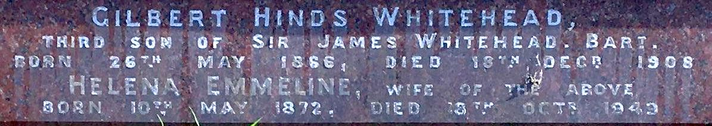

Brett-Whitehead family history
Notes on the family history, that starts from the marriage of John Brett and (Margaret) Joy Whitehead, in May 1928 (see below).
John and Joy had three children:
- Sue Oliver
- Jennifer Brooke-Smith
- Martin Brett b 1939-01-06.
For John Brett see John Brett
Bretts
This is Martin’s sketch of the Brett side of the family tree:

Early Brett family
- Curtis Brett (b ~1720), printer. CB wikitree entry. CB will. Father of Charles Richard Brett (born and died 1761) and Curtis Brett (b
- Curtis Brett (b 1765). CB Jr wikitree entry. Father of Charles Curtis Brett (b 1789).
- Charles Curtis Brett (b 1789). CCB wikitree entry. Father of John Brett (b 1831).
Charles Curtis Brett’s household in the 1851 census.
| Name | Age | Relation | Profession |
|---|---|---|---|
| Charles C Brett | 67 | Head | Vetinary surgeon ?army |
| Ann Brett | 42 | Wife | |
| Rosa Brett | 21 | Daughter | |
| John Brett | 19 | Son | ? landscape ? |
| Theodore Brett | 17 | Son | Scholar |
| Arthur Brett | 15 | Son | Scholar at home |
| Edwin Brett | 10 | Son | Scholar at home |
| Elizabeth Walker | 47 | Servant | ?house? |
See CCB 1851 census original image
{kind=link}
1851 England census; Class: HO107; Piece: 1617; Folio: 593; Page: 37; GSU roll: 193518
John Brett (b 1831)
The Dictionary of National Biography (1912) on John Brett (the painter). “BRETT, JOHN (1831–1902), landscape painter, born at Bletchingley, Surrey, on 8 Dec. 1831, was eldest son of Captain Charles Curtis Brett of the 12th lancers by his wife Ann Philbrick. […] He died in his house at Putney on 8 Jan. 1902. He married in 1870, and had four sons and three daughters who survived him. A portrait in oils by himself, painted about 1865, belongs to his son, Mr. Michael Brett.”
The current ODNB article (behind a paywall) adds “Captain Charles Curtis Brett (1789–1865), an army veterinarian” and “Ann Pilbean (b. 1808/9)”. “About 1870 Brett met, and later married, Mary Ann Howcroft (b. 1844/5), with whom he had seven children, the first being born in either 1871 or 1872.”
There is a Mary Ann Brett at this MyHeritage.com page that appears to match John’s partner and Michael’s mother.
FeeBMD has no record of a marriage between “John Brett” and someone with surname “Howcroft” between 1840 and 1902.
Rosa Brett was John (the painter’s) older sister. The ODNB has “Brett, Rosa [pseud. Rosarius] (1829–1882), painter, was born on 7 December 1829 and baptized at St George’s, Camberwell, Surrey, on 26 March 1830, the eldest of the five children of Captain Charles Curtis Brett (1789–1865), veterinary surgeon in the 12th lancers, and his wife, Ann, née Pilbean (b. 1808/9), of Tonbridge, Kent.”
Children of John Brett (b 1831)
The record for John’s household in the 1881 census records these household members at No 6 Keswick Road, London:
| Name | Age | Relation |
|---|---|---|
| John Brett | 49 | Head |
| Mary Brett | 37 | Wife |
| Michael Brett | 9 | Son |
| Daisy Brett | 8 | Daughter |
| Jasper Brett | 6 | Son |
| Alfred J. Brett | 4 | Son |
| Pansy Brett | 2 | Daughter |
| Spencer Brett | Son | |
| Margaret Reeve | 22 | Cook |
| Elizabeth Rulings | 19 | Housemaid |
John’s occupation is “Painter (ARA)”.
1881 England Census. Class: RG11; Piece: 656; Folio: 128; Page: 30; GSU roll: 1341152
The 1891 census has his address as Daisy Field, and members:
| Name | Age | Relation |
|---|---|---|
| John Brett | 59 | Head |
| Mary Brett | 44 | Wife |
| Michael Brett | 19 | Son |
| Daisy Brett | 18 | Daughter |
| Pansey Brett | 12 | Daughter |
| Spencer Brett | 10 | Son |
| Gwendoline Brett | 7 | Daughter |
| Jessie Barrett | ?67 | Governess |
| Ellen Amor | 24 | Servant ? cook |
| Ada R Cliffe | 23 | Housemaid |
The National Archives of the UK (TNA); Kew, Surrey, England; Census Returns of England and Wales, 1891; Class: RG12; Piece: 445; Folio: 94; Page: 4; GSU roll: 6095555
Alfred J Brett appears to be at Winchester, in 1891:
The National Archives of the UK (TNA); Kew, Surrey, England; Census Returns of England and Wales, 1891; Class: RG12; Piece: 937; Folio: 131; Page: 3; GSU roll: 6096047
- Michael - various official data. There is a page on Michael at ancestry.co.uk.
- Daisy https://ancestors.familysearch.org/en/LDMW-P94/daisy-brett-1873-1957
- Jasper https://ancestors.familysearch.org/en/LDMW-GJ8/jasper-brett-1874-1950
- Alfred Jeaffreson - see Alfred Brett Ancestry.com page.
- Pansy, and section at Pansy Marshall Ancestry.com page.
- Spencer https://ancestors.familysearch.org/en/L8QX-K6X/spencer-brett-1880-1953
- Gwendoline
Michael’s census record for 1911 shows him to be living in Hangerlea, Stansted Road, Bishop’s Stortford, with this household:
| Name | Age |
|---|---|
| Michael Brett | 39 |
| Nellie Mary Brett | 29 |
| Joan Brett | 8 |
| John Brett | 6 |
| Peter Brett | 1 |
| Tirzah Faulder | 25 |
| Caroline Alice Hudgell | 24 |
| Annie Amelia Smith | 27 |
Tentative: Joan Brett married Alistair William Hay — presumably subject of this article.
Whiteheads
See extract from Burke’s peerage, 1949 for full summary of Whitehead family tree to 1949.
Margaret Joy Whitehead:
Quoting from the extract from Burke’s peerage above:
- Gilbert Hinds, b. 26 May, 1866 ; to. 10 April, 1901, •Helena Emmeline, (New Raven, Eltham, Kent), only dau. of late Henry A. Langford, of Plymouth, and d. 18 Dec. 1908, leaving issue,
- Margaret Joy, m. 5 May, 1928, Lt.-Cmdr. John Brett, D.S.C., R.N., elder son of Michael Brett, of Bishop’s Stortford, and has issue. He was k. in action in H.M.S. Gloucester, off Crete, 22 May, 1941.
1959 edition adds only that Helena Emmeline died in 1949, and address for Margaret Joy of “Heath Cottage, Puttenham, Guildford, Surrey”.
2003 edition (excerpted in peerage.com summary adds that Margaret Joy married Robert Clement Giles on 24th July 1965.
Marriage: https://www.freebmd.org.uk:
Type: Marriages Surname: Brett First name(s): John
Start date: Mar 1920 End date: Dec 1935 Spouse/Mother's surname: Whitehead
Spouse's first name(s): Margaret
Marriages Jun 1928
Brett John Whitehead Lewisham 1d 2117She died in 1981: https://www.freebmd.org.uk
Deaths Jun 1981 (>99%)
GILES MARGARET JOY 12JE1905 SURREY S W 17 1323According to http://www.thepeerage.com/p31681.htm#i316808, Gilbert Hinds Whitehead was the fifth child (and third son) of Sir James Whitehead, 1st Baronet and Mercy Matilda Hinds. Further links there say Helena Emmeline Langford was the daughter of Henry A. Langford, but no mention of her mother. This site claims she married Gilbert Hinds on 10 April 1901, and died in 1949. Her age on her death certificate (from 1949) suggests she was born around 1872:
Deaths Dec 1949 (>99%)
Whitehead Helena E 77 Woolwich 5d 878Marriage record is very likely to be:
Marriages Jun 1901 (>99%)
Whitehead Gilbert Hinds Truro 5c 237This site about a gravesite for the Whitehead family has the following information:

Gilbert Hinds Whitehead
Third son of Sir James Whitehead. Bart.
Born 26th May 1886, died 18th December 1908
Helena Emmeline, wife of the above
Born 10 May 1872, died 18 Oct 1949
Helena’s date of birth tallies with this birth certificate:
LANGFORD, HELENA EMMELINE
BRAGINTON
GRO Reference: 1872 J Quarter in PLYMOUTH Volume 05B Page 251
In the 1881 census, Helena Emmilina Langford was at 5 North Hills Terrace, in the following household:
| Name | Age | Relation | Marriage | Profession |
|---|---|---|---|---|
| Clara Louisa Langford | 42 | Head | Widow | Lady |
| Ellen Macornick Johns | 22 | Daughter | Single | Lady |
| Richard Braginton Johns | 18 | Son | Single | Solicitor’s articled clerk |
| Helena Emmilina Langford | 8 | Daughter | Single | Scholar |
| George Stawell Tuckey | 27 | Visitor | Single | Solicitor |
| Fanny Gent | 47 | Servant | Single | Cook Domestic |
| Elizabeth Dunn | 16 | Servant | Single | Housemaid |
See the HEL 1881 census original image
{kind=link}
In 1891 Helena is living at 8 Roman Road, Chiswick, with her half-brother, and one of the same servants, Fanny Gent:
| Name | Age | Relation | Marriage | Profession |
|---|---|---|---|---|
| Edmund A Johns | 26 | Head | Single | Living on own means |
| Helena E Langford | 18 | Half-sister | Single | Scholar |
| Fanny Gent | 62 | Servant | Single | Cook Domestic |
The National Archives of the UK (TNA); Kew, Surrey, England; Census Returns of England and Wales, 1891; Class: RG12; Piece: 1034; Folio: 83; Page: 31; GSU roll: 6096144
See the HEL 1891 census original image
{kind=link}
It looks like Helena is in Truro, as Helena E Langford, for the 1901 survey, which is also where she married Gilbert Hinds Whitehead.
Search for Richard Braginton Johns suggests his father was Edmund Allen Johns, who died in 1864, and Clara Louise Braginton (b 1837).
Edmund Allen Johns married Clara Braginton in 1857:
Marriages Mar 1857 (>99%)
Johns Edmund Allen Torrington 5b 793He died in Truro in 1864:
Deaths Dec 1864 (>99%)
Johns Edmund Allen Truro 5c 113Henry A Langford married Clara Johns in 1866, in Plymouth:
Marriages Jun 1866 (>99%)
LANGFORD Henry A Plymouth 5b 437Apart from Helena Emmeline, there was only one other Langford born in Plymouth between 1864 and 1890:
Births Jun 1868 (>99%)
LANGFORD Albert Leonard Plymouth 5b 265Albert Leonard Langford died at age 11, also in Plymouth, which would explain why he is not in Clara Louisa’s Household in 1881.
Deaths Dec 1879 (>99%)
Langford Albert Leonard 11 Plymouth 5b 193